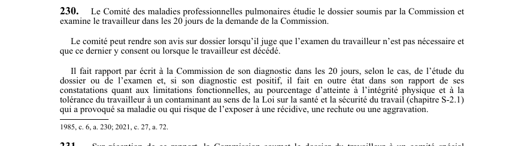

art-230-LATMP : examen et rapport du Comité des maladies professionnelles pulmonaires
Le Comité des maladies professionnelles pulmonaires (CMPP), et non le BEM, étudie le dossier que lui soumet la CNESST, examine le travailleur et rend un diagnostic écrit.
- Examen du travailleur dans les 20 jours de la demande de la CNESST.
- Rapport écrit du diagnostic à la CNESST dans les 20 jours, selon le cas, de l'étude du dossier ou de l'examen.
- Avis possible sur dossier seul, sans examen, si le comité juge l'examen inutile et que le travailleur y consent, ou si le travailleur est décédé.
- Diagnostic positif : le rapport doit aussi couvrir les limitations fonctionnelles, le pourcentage d'atteinte à l'intégrité physique et la tolérance du travailleur au contaminant visé par la LSST (chapitre S-2.1).
- Contaminant visé : celui qui a provoqué la maladie ou qui risque d'exposer le travailleur à une récidive, une rechute ou une aggravation.
🌐 LegisQuébec · 📄 PDF officiel (page 59)
Texte officiel
Le Comité des maladies professionnelles pulmonaires étudie le dossier soumis par la Commission et examine le travailleur dans les 20 jours de la demande de la Commission.
Le comité peut rendre son avis sur dossier lorsqu’il juge que l’examen du travailleur n’est pas nécessaire et que ce dernier y consent ou lorsque le travailleur est décédé.
Il fait rapport par écrit à la Commission de son diagnostic dans les 20 jours, selon le cas, de l’étude du dossier ou de l’examen et, si son diagnostic est positif, il fait en outre état dans son rapport de ses constatations quant aux limitations fonctionnelles, au pourcentage d’atteinte à l’intégrité physique et à la tolérance du travailleur à un contaminant au sens de la Loi sur la santé et la sécurité du travail (chapitre S‐2.1) qui a provoqué sa maladie ou qui risque de l’exposer à une récidive, une rechute ou une aggravation.
Texte de l’article 230 LATMP, extrait de la couche texte du PDF officiel (page 59), sans OCR ni retouche. La capture ci-dessous et le PDF font foi.
{kind=link}

Toucher l'image pour l'agrandir🔗 Ouvrir a cette page : LATMP.pdf : page 59 · texte a jour au 20 février 2024
Voir aussi
- 🔧 Modifié par : LMRSST art. 72 · remplace art.
- ↑ Loi : LATMP
Pages qui pointent ici (8)
- art-72-LMRSST : modifie l'art. 230 LATMP Recueil législatif
- CMPP-CSP (comités des maladies professionnelles pulmonaires) Recueil législatif
- Convoqué au BEM, un médecin que tu n'as pas choisi Droit du travail
- Délais clés en SST québécoise Recueil législatif
- Évaluation médicale et BEM Droit du travail
- LATMP : Chapitre VII : Aspects médicaux (MQAC, BEM) Recueil législatif
- LMRSST : Chapitre I : Modifications à la LATMP Recueil législatif
- Organismes du régime SST Droit du travail